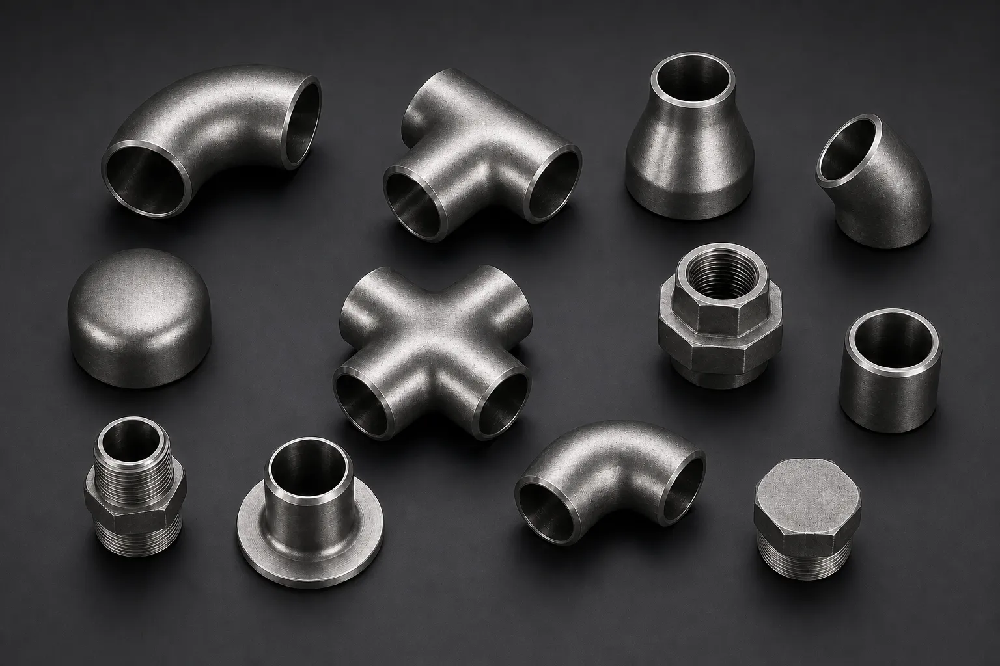

Gururaj Infradesigns is a trusted Hastelloy C276 Pipe Fittings Manufacturer and Supplier in India, offering ASTM B366 / ASME SB366 elbows, tees, reducers, pipe caps, and stub ends in UNS N10276 alloy for chemical processing, petrochemical, offshore, marine, and pollution control applications.
Hastelloy C276 Pipe Fittings are high-performance nickel-molybdenum-chromium alloy fittings engineered for some of the most demanding corrosive environments found in modern industries. These fittings are widely used in chemical processing plants, offshore installations, petrochemical facilities, pollution control systems, and power generation projects where exceptional corrosion resistance is required. Gururaj Infradesigns is a trusted Hastelloy C276 Pipe Fittings Manufacturer in India, supplying premium-quality fittings designed to deliver long-term performance in aggressive service conditions.
Our product range includes elbows, tees, reducers, pipe caps, stub ends, and crosses manufactured in accordance with international standards. Hastelloy C276 Pipe Fittings are recognized worldwide for their ability to resist pitting, crevice corrosion, stress corrosion cracking, and chemical attack across a broad spectrum of industrial environments.

Hastelloy C276, also known as UNS N10276, is a nickel-chromium-molybdenum alloy developed for superior resistance to highly corrosive chemicals and harsh process conditions. The alloy performs exceptionally well in both oxidizing and reducing environments, making it one of the most versatile corrosion-resistant materials available for industrial piping systems.
As part of our comprehensive range of Nickel Alloy Pipe Fittings, Hastelloy C276 Pipe Fittings are widely selected for applications involving sulfuric acid, hydrochloric acid, chlorine compounds, wet chlorine gas, and other aggressive chemicals. Their excellent corrosion resistance helps improve operational reliability while reducing maintenance and replacement costs.
| Parameter | Details |
|---|---|
| Product | Hastelloy C276 Pipe Fittings |
| Specifications | ASTM B366, ASTM SB366, ASTM B564, ASME SB564 |
| Standards | ASTM B366 / ASME SB366 |
| Dimensions | ANSI/ASME B16.9, B16.25, B16.28, MSS-SP-43, MSS-SP-48, MSS-SP-59 |
| Product Types | Elbow, Tee, Reducer, Pipe Cap, Stub End, Cross |
| Size Range | 1/8" NB to 48" NB |
| Type | Seamless / ERW / Welded / Fabricated |
| Thickness | SCH 5S, SCH 10S, SCH 20, SCH 40S, STD, SCH 60, SCH 80S, XS, SCH 100, SCH 120, SCH 140, SCH 160, SCH XXS |
| Bending Radius | R=1D, 2D, 3D, 5D, 6D, 8D, 10D or Custom |
| Certification | EN 10204 3.1 / MTC Available |
Hastelloy C276 Pipe Fittings provide outstanding resistance to a wide range of aggressive chemicals, including oxidizing and reducing acids. This makes them suitable for highly corrosive industrial processes where conventional alloys may fail.
The alloy offers superior protection against localized corrosion, particularly in chloride-rich environments. This helps improve equipment reliability and minimize unexpected downtime.
Hastelloy C276 is widely recognized for its ability to withstand harsh chemical exposure, making it a preferred material for critical process industries handling corrosive media.
The alloy maintains excellent mechanical properties and corrosion resistance even at elevated temperatures, supporting long-term performance in demanding service conditions.
Its combination of durability, corrosion resistance, and mechanical stability contributes to a longer operational lifespan and lower lifecycle costs.
| Element | Composition (%) |
|---|---|
| Nickel | Balance |
| Molybdenum | 15.0 – 17.0 |
| Chromium | 14.5 – 16.5 |
| Iron | 4.0 – 7.0 |
| Tungsten | 3.0 – 4.5 |
| Cobalt | Max 2.5 |
| Manganese | Max 1.0 |
| Silicon | Max 0.08 |
| Carbon | Max 0.01 |
| Property | Value |
|---|---|
| Tensile Strength | 690 MPa Min |
| Yield Strength | 283 MPa Min |
| Elongation | 40% Min |
| Density | 8.89 g/cm³ |
| Melting Range | 1325°C – 1370°C |
Hastelloy C276 Pipe Fittings are extensively used in chemical plants handling highly corrosive acids, solvents, and aggressive process chemicals. Their exceptional corrosion resistance helps maintain safe and efficient operations.
Petrochemical facilities utilize these fittings in critical process piping systems where resistance to chemical attack and elevated temperatures is essential for long-term reliability.
The alloy performs exceptionally well in scrubbers, flue gas desulfurization units, and environmental control equipment exposed to corrosive gases and chemicals.
Hastelloy C276 Pipe Fittings provide excellent resistance to seawater and chloride-containing environments, making them suitable for offshore platforms and marine processing systems.
Power plants rely on these fittings for critical piping applications where strength, corrosion resistance, and operational reliability are important.
| Property | Hastelloy C276 | Hastelloy C22 | Monel 400 |
|---|---|---|---|
| Corrosion Resistance | Excellent | Excellent | Very Good |
| Reducing Acid Resistance | Superior | Excellent | Good |
| Oxidizing Acid Resistance | Excellent | Superior | Moderate |
| Pitting Resistance | Excellent | Excellent | Good |
| Chloride Resistance | Excellent | Excellent | Very Good |
| Chemical Processing Applications | Extensive | Extensive | Moderate |
| Marine Service | Excellent | Excellent | Excellent |
| High-Temperature Performance | Excellent | Very Good | Good |
| Fabrication Characteristics | Good | Good | Excellent |
| Typical Use | Severe Chemical Service | Mixed Chemical Service | Marine Applications |
Hastelloy C276 Pipe Fittings are widely selected for applications involving severe corrosive environments and aggressive reducing acids. For mixed oxidizing and reducing environments, many industries choose Hastelloy C22 Pipe Fittings, while Monel 400 Pipe Fittings remain a preferred choice for marine and seawater service applications.
| Finish | Benefits |
|---|---|
| Pickled | Removes surface contamination and enhances corrosion resistance |
| Passivated | Improves formation of a protective oxide layer |
| Polished | Provides a cleaner and smoother surface finish |
| Mill Finish | Suitable for standard industrial applications |
Proper finishing and surface treatment help maximize corrosion resistance and maintain product performance in demanding service conditions.
Gururaj Infradesigns supplies Hastelloy C276 Pipe Fittings in a wide range of sizes, schedules, and configurations for chemical processing, petrochemical, marine, and power generation applications. Our products are supplied to EPC contractors, engineering companies, fabricators, and industrial buyers across India.
With a focus on product quality, technical support, and timely delivery, we help customers source dependable nickel alloy pipe fittings that meet project specifications and operational requirements.
At Gururaj Infradesigns, quality remains an important part of our manufacturing and supply process. All pipe fittings undergo inspection for dimensional accuracy, workmanship, and material compliance before dispatch.
As an ISO Certified Company, we are committed to supplying reliable piping components that meet industrial expectations for quality, consistency, and performance.
Selecting the right nickel alloy pipe fitting depends on process chemistry, operating temperature, pressure conditions, and corrosion requirements. Choosing the correct alloy helps improve plant reliability, safety, and overall service life. Our team can assist in selecting the most suitable fitting grade, size, and specification based on your project requirements. We work closely with engineers, consultants, EPC contractors, and industrial buyers to provide practical guidance and dependable piping solutions for demanding industrial environments.